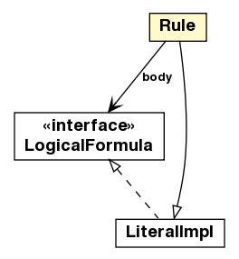

jason.asSyntax
Class Rule

java.lang.Object
 jason.asSyntax.DefaultTerm
jason.asSyntax.Literal
jason.asSyntax.Atom
jason.asSyntax.Structure
jason.asSyntax.Pred
jason.asSyntax.LiteralImpl
jason.asSyntax.Rule
jason.asSyntax.DefaultTerm
jason.asSyntax.Literal
jason.asSyntax.Atom
jason.asSyntax.Structure
jason.asSyntax.Pred
jason.asSyntax.LiteralImpl
jason.asSyntax.Rule
- All Implemented Interfaces:
- LogicalFormula, Term, ToDOM, java.io.Serializable, java.lang.Cloneable, java.lang.Comparable<Term>
public class Rule
- extends LiteralImpl
A rule is a Literal (head) with a body, as in "a :- b & c".
- See Also:
- Serialized Form
| Methods inherited from class jason.asSyntax.Pred |
addAnnot, addAnnots, addAnnots, addSource, apply, clearAnnots, createSource, delAnnot, delAnnots, delSource, delSources, equalsAsStructure, getAnnots, getAnnots, getSources, hasAnnot, hasAnnot, hasSource, hasSource, hasSubsetAnnot, hasSubsetAnnot, importAnnots, isGround, isPred, parsePred, setAnnots, toStringAsTerm |
| Methods inherited from class jason.asSyntax.Structure |
addTerm, addTerms, addTerms, delTerm, getArity, getSingletonVars, getTerm, getTerms, getTermsSize, hasTerm, isStructure, makeTermsAnnon, makeVarsAnnon, parse, setTerm, setTerms, varToReplace |
| Methods inherited from class jason.asSyntax.DefaultTerm |
getSrcInfo, isArithExpr, isInternalAction, isList, isNumeric, isPlanBody, isString, isUnnamedVar, isVar, resetHashCodeCache, setSrcInfo |
| Methods inherited from class java.lang.Object |
finalize, getClass, notify, notifyAll, wait, wait, wait |
| Methods inherited from interface jason.asSyntax.Term |
apply, getSrcInfo, isArithExpr, isGround, isInternalAction, isList, isLiteral, isNumeric, isPlanBody, isPred, isString, isStructure, isUnnamedVar, isVar, setSrcInfo |
Rule
public Rule(Literal head,
LogicalFormula body)
isRule
public boolean isRule()
- Specified by:
isRule in interface Term- Overrides:
isRule in class DefaultTerm
equals
public boolean equals(java.lang.Object o)
- Specified by:
equals in interface Term- Overrides:
equals in class LiteralImpl
hashCode
public int hashCode()
- Overrides:
hashCode in class DefaultTerm
getBody
public LogicalFormula getBody()
makeVarsAnnon
public Literal makeVarsAnnon(Unifier un)
- Description copied from class:
Literal
- replaces all variables of the term for unnamed variables (_).
- Overrides:
makeVarsAnnon in class Pred
- Parameters:
un - is the unifier that contains the map of replacements
clone
public Rule clone()
- Description copied from class:
Structure
- make a deep copy of the terms
- Specified by:
clone in interface Term- Overrides:
clone in class LiteralImpl
headClone
public Literal headClone()
toString
public java.lang.String toString()
- Overrides:
toString in class LiteralImpl
hasVar
public boolean hasVar(VarTerm t)
- Specified by:
hasVar in interface Term- Overrides:
hasVar in class Pred
countVars
public void countVars(java.util.Map<VarTerm,java.lang.Integer> c)
- Specified by:
countVars in interface Term- Overrides:
countVars in class Pred
getAsDOM
public org.w3c.dom.Element getAsDOM(org.w3c.dom.Document document)
- get as XML
- Specified by:
getAsDOM in interface ToDOM- Overrides:
getAsDOM in class LiteralImpl